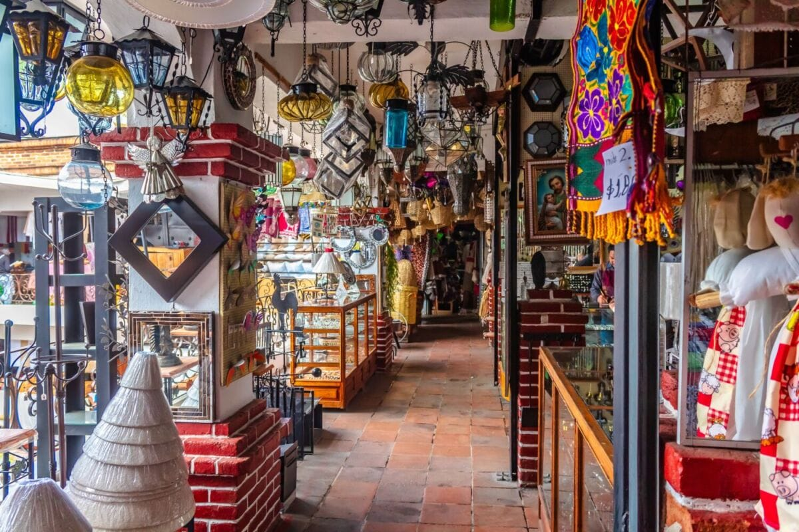
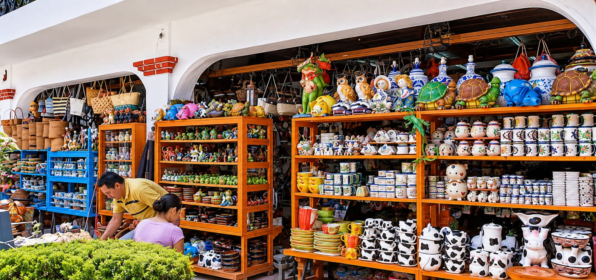
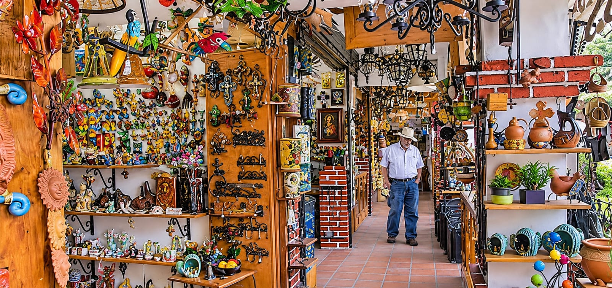

En sus coloridos pasillos se encuentran lámparas, adornos, textiles y recuerdos elaborados con diferentes materiales. Sus tiendas ofrecen una gran variedad de artículos que reflejan la creatividad y el encanto de Valle de Bravo.
Al recorrer estos establecimientos es posible descubrir diferentes estilos de decoración, objetos tradicionales, accesorios y productos elaborados por manos artesanas. Sus espacios están llenos de colores, diseños y detalles que llaman la atención de los visitantes. Además, representan una oportunidad para conocer el trabajo de los comerciantes locales y adquirir recuerdos especiales de la región.

Las tiendas exhiben hermosas piezas de cerámica, macetas, figuras decorativas y vajillas de distintos diseños. Son ideales para encontrar detalles especiales y llevarse un recuerdo del municipio.
Entre sus productos destacan las piezas pintadas con diferentes colores, figuras de animales, recipientes, jarrones y objetos ornamentales. Cada diseño ofrece una combinación de creatividad, formas y acabados que permite apreciar el valor del trabajo artesanal. Estas piezas también pueden utilizarse para decorar hogares, jardines y diferentes espacios, convirtiéndose en recuerdos representativos de la visita.

Entre colores, figuras y objetos hechos a mano, estos espacios muestran parte de la riqueza artesanal de la región. Cada artículo conserva detalles únicos que hacen especial la experiencia de recorrer sus tiendas.
En sus estantes se pueden observar decoraciones de barro, figuras metálicas, platos pintados, lámparas y diversos artículos inspirados en la cultura mexicana. La variedad de materiales y diseños permite apreciar distintas formas de expresión artística. Además, estos establecimientos contribuyen a mantener viva la actividad comercial y artesanal, ofreciendo a los turistas la oportunidad de conocer nuevas tradiciones y llevarse un recuerdo lleno de color y significado de Valle de Bravo.
¡Conoce, disfruta y comparte nuestras maravillas!
VER VIDEO EN TIKTOK